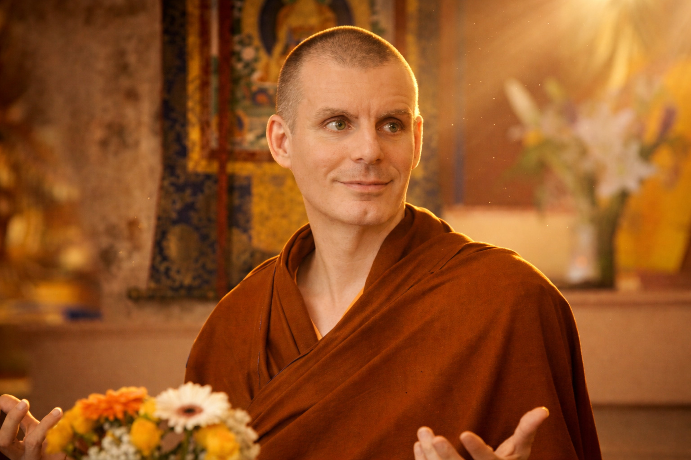
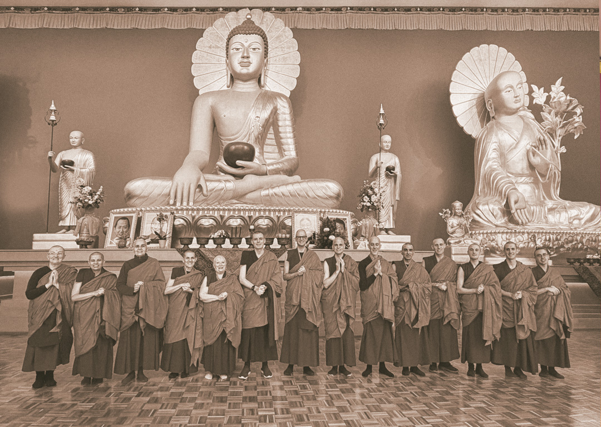
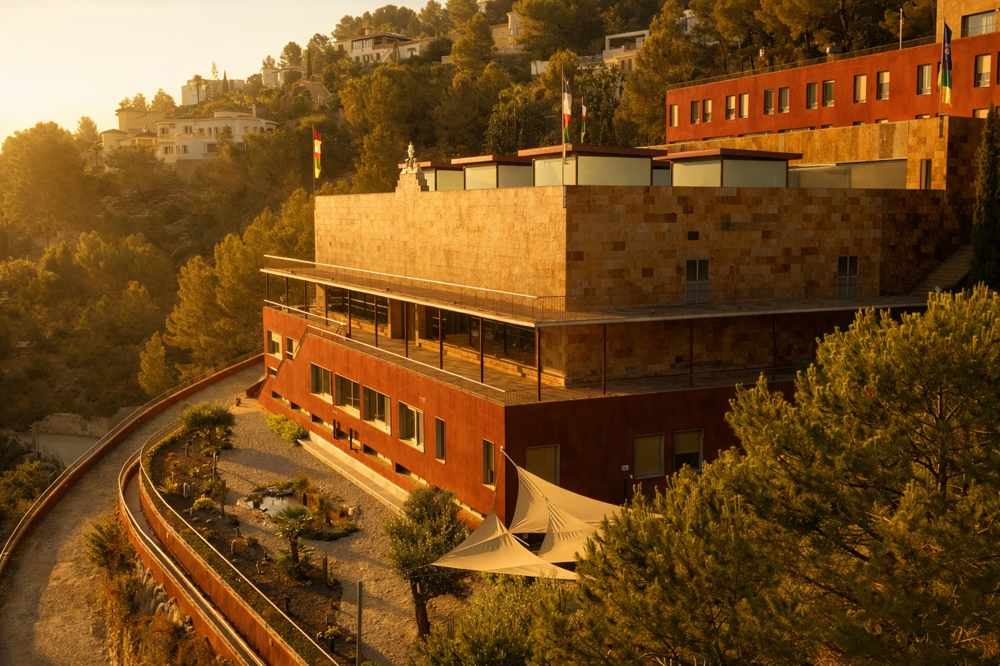

Maestras del linaje
Mandarava: la mujer que emergió del fuego
La historia de una de las grandes maestras tántricas y su camino de realización.
Leer másSistema completo de meditación
Aprende a vivir con equilibrio e integra cada aspecto de tu vida —la mente, el corazón, lo cotidiano— en un único camino de desarrollo personal y espiritual.
Un colectivo internacional de grupos budistas que crea espacios para compartir la meditación y las enseñanzas del Buddha. Formaciones y retiros en el Centro Budista Sakya, Alicante, y cursos en línea para todos los niveles.
Centro Budista Paramita
Cinco niveles, decenas de cursos. Elige por dónde entrar al sendero — sin prisa, sin niveles saltados.
Cada gesto sostiene la comunidad. Encuentra la manera que resuene contigo y súmate al proyecto.
Únete a un grupo de meditación, presencial u online, y sostén tu práctica acompañado.
El voluntariado mantiene vivo el centro: desde la acogida hasta la traducción de enseñanzas.
Tu aportación libre hace posible que las enseñanzas sigan siendo accesibles para todos.
Crowdfunding · Centro de Retiros Paramita
Un lugar donde la práctica encuentra silencio y la comunidad encuentra hogar. Tu aportación levanta, piedra a piedra, un espacio de retiro abierto a todos.
Unirme a este sueño compartidoDetrás de cada curso hay un maestro, un linaje de siglos y una casa con puertas abiertas en Alicante.

Paramita transmite la tradición Sakya —una de las cuatro grandes escuelas del budismo tibetano, con casi mil años de linaje ininterrumpido— a quienes practican en español. No es una app de bienestar: es una comunidad con maestro, sede y raíces.


Pasa el cursor por cada tarjeta: la imagen crece y el título asoma desde el fondo.
La historia de una de las grandes maestras tántricas y su camino de realización.
Leer másUna introducción serena al vehículo del diamante y sus métodos de transformación.
Leer másEl origen del linaje Sakya y la transmisión que aún nos acompaña hoy.
Leer másTodo lo que necesitas saber antes de recibir la transmisión de la Ofrenda de Mandala, la quinta práctica fundamental no común del Ngondro de la Tradición Sakya.
Leer másSuscríbete a nuestra newsletter: ideas sencillas, propuestas de práctica y noticias de Paramita, de vez en cuando, en tu correo.
¿Prefieres sostener el proyecto? Contribuir